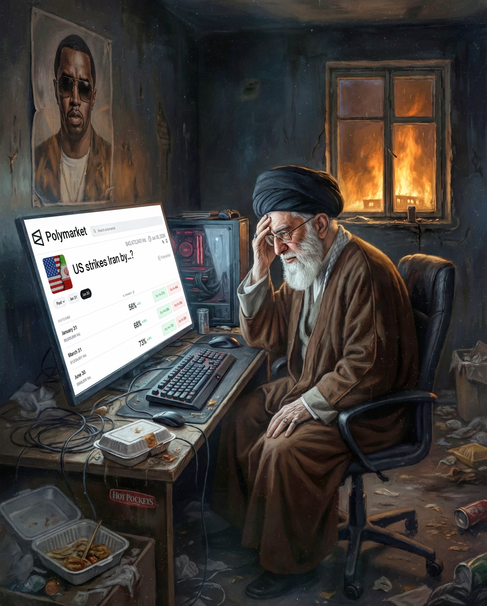
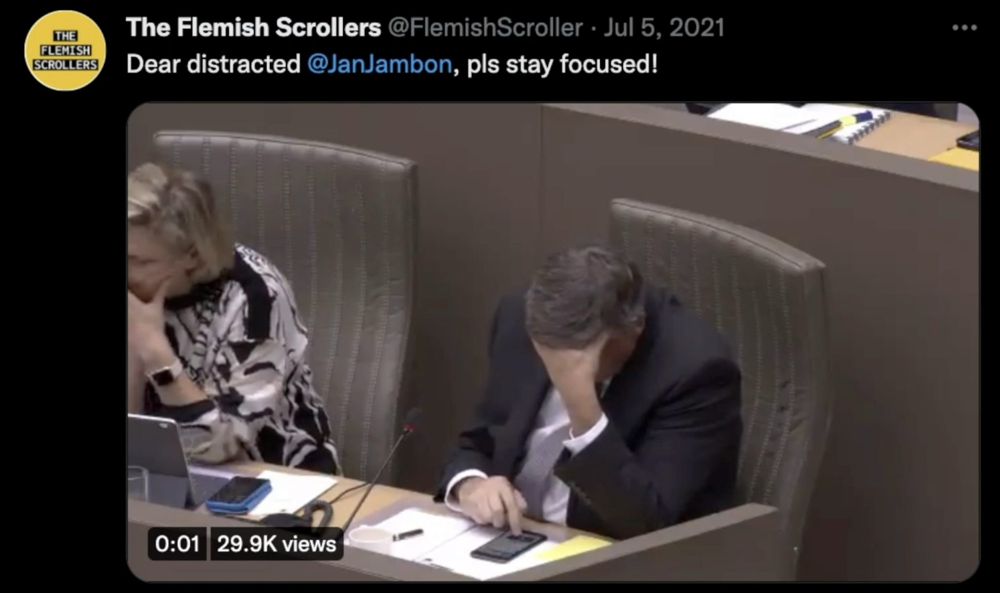
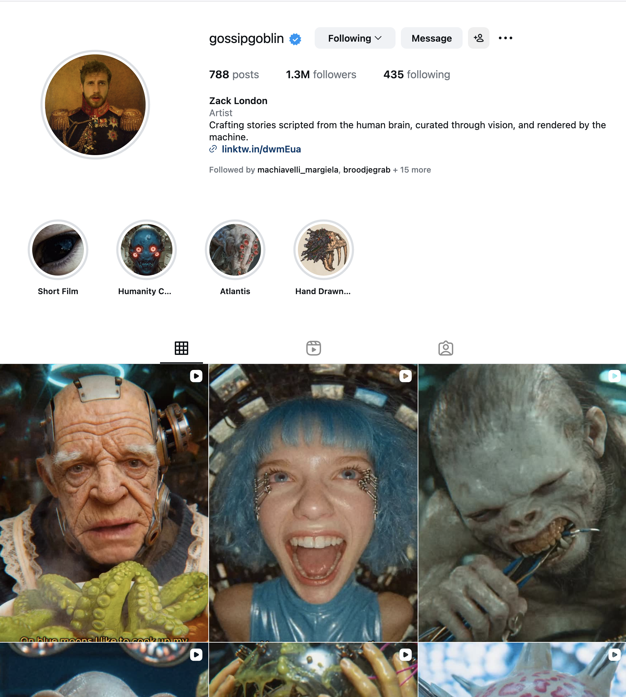

Memes Against the Machine: Memetic Logic as Political Force in Contemporary Art and Digital Culture
In a world that seemingly turns more dystopian year-by-year, I have an easy time trapping myself on the internet. Here I can, in the comfort of my own room—or wherever (and whenever)—indulge in the act of collecting infinite dopamine-treats through numerous activities (e.g., scrolling through Instagram Reels, watching YouTube Shorts, etc.). It is the perfect way to lose touch with reality. I do not have to come to terms with the difficulties of others and myself.
In order to write out this thesis, I did something that, for me, seemed impossible; I deleted Instagram. An app that prior to this thesis would take a considerable chunk out of my day. Instagram is my favorite way to escape reality. As on any digital social platform, Instagram is an atmosphere that is cluttered with memes. Most of us know that each social platform has an “all-knowing” algorithm that will try to feed you whatever it is you seek. And for me, that mostly meant politically flavored memes. These digital artifacts can be used as a way to process all the insanity that keeps on piling up. Sometimes it feels like life is one big, never-ending Black Mirror1 episode. For most, a meme is a shared laugh between one another, and I wondered if it could be more than a simple laugh. Through constant interaction with digital spaces, I’ve come to realize that memes are not just ephemeral jokes—they can function as a lens through which I perceive, interpret and critique the world around me.
Figure 1: Trump Presenting Favorite JD Vance Meme, https://www.reddit.com/r/MemeTemplatesOfficial/comments/1jpzjds/trump_presenting_favorite_jd_vance_meme/.
A prime figure that is known for spreading their baffling statements and decisions is the current president of the United States of America. And whenever such an event takes place, the internet is anything but slow, striking back by remixing, spreading, and reacting through memetic formats. For example, the hasty implementation of the reciprocal tariffs back in early 2025 (Figure 1). Events like these make me believe that I am not alone in this realization. So, if memes can do this for me, are they doing the same for others, and could they also contribute to something more, like a wider political conversation? How can we harness this power? In other words, how do memes function as networked visual systems that challenge institutional narratives during geopolitical crises? With institutional narratives, I am referring to official framings produced by governments, legacy media, and other structures of power that decide how we perceive geopolitical events. In times of geopolitical tension, these narratives (policy shifts, economic measures, international conflicts, etc.) often try to contain uncertainty, while memetic responses tend to disrupt or destabilize and reinterpret them. This thesis is not purely analytical; it also explores how certain strategies from memetic practice can inform and/or inspire my own artistic work.
The study of memes is at an infant stage. That is unsurprising given that the term “meme” was first coined in the late 1970s by evolutionary biologist Richard Dawkins.2 So the meaning and understanding of what is considered a meme is rather broad, fluid, and still growing. As for the scope of this thesis however, you will come to understand that we go beyond the meaning of the familiar internet image. We will discuss what memes are and what they can do, by introducing the ideas of other authors. For instance, Metahaven, an Amsterdam-based design collective specializing in politics and aesthetics, who with their book Can Jokes Bring Down Governments?: Memes, Design and Politics, laid down the theoretical backbone for understanding memes as political and design objects. In this thesis I make connections between, artworks, social events, video games, digital memes, and anything else I associate with the memosphere or that I have encountered through interacting with memetic material, and examine how these can act as frameworks for challenging, reframing, and undermining or disrupting institutional narratives.
Chapter 1: The Anonymity of Memes and Their Un-Communication
By asking ourselves the question “What is a meme?” we can come to understand that much like an onion, a meme is layered. There is no one leading definition of what a meme is. Metahaven gives us some representative examples in their book Can Jokes Bring Down Governments?: Memes, Design and Politics. They say that “[m]emes are units of culture and behavior, which survive and spread via imitation and adaptation.”3 This lets us know that at the core a meme needs to live in an environment where that is possible, which could explain why they appear in abundance on social media. They also say that “[m]emes are not phenomena of language; they are phenomena with language. From words that simply ‘annotate’ a meme, conveying its minimally required meaning in a given context, to words that become an integral part of the meme’s functioning.”4 Effectively, this means that memes don’t function as standard texts. But rather use language as a tool or an ingredient; it can describe the meme by using a simple label, or the language used can be an inseparable part of how it operates.
In their book, they also note the origin of the word “meme” coined by Dawkins, providing what can be considered the basis for the study of memes (Memology).5 However, in Critical Meme Reader III: Breaking the Meme, researchers Chloë Arkenbout and Idil Galip, talk about “neologisms taking precedence over the Dawkinsian ‘meme’,”6 indicating that the concept of a meme continues to expand beyond its original formulation7. This opens a broader scope of memetic phenomena, “from bits of internet humor, image-macros, viral videos, to copy-pasta, urban legends, techno genres, dance routines, and bodily gestures”8 and more.
To address the strength of political memes, we have to look beyond their humor, and look at the specific conditions under which they spread. From what I’ve noticed myself as a casual netizen, as well as what stood out during my reading, is that they tend to circulate most intensely in times of political instability or crisis, when official narratives feel inadequate, or when there is a stark contrast between what institutions bring forward, and what the general public perceives. Another thing worth noting is the speculative aspect of memes; they rarely claim to know the truth, they hint towards it, they turn something that can’t be confirmed into something that can be shared. Another key aspect is the abstraction layer, the ability to strip something of its original context and repackage it into something that amplifies its ability to sustain relevance beyond its immediate moment it emerged from—feeding longer cultural or political debate rather than dying with the news cycle. Furthermore we can also look at their ability to un-communicate. As scholar Hugo Almeida and researcher Adalberto Fernandes argue, the meme is not an exchange between a sender and a receiver, but rather the collapse of that binary altogether—it asks for no prescribed receiver, and in doing so, opens up the possibility of immediate comprehensibility upon circulation.9 This means that a meme does not communicate to anyone in particular but rather exists, available to whoever can make something of it. And because it has no fixed destination, it can be reused, recycled, and infused with new meaning indefinitely. And lastly I want to mention the role of anonymity. Because memes often lack a clear author, and that the identity of the sender does not primarily matter for a meme to multiply, they get the ability to move rather freely and speak for a broad collective instead of a single identifiable entity.
Mike Winkelmann, better known as Beeple, is an American artist known for his collection of artworks called "Everydays", where he'd upload a new digital picture each day for over 14 years, but more recently for selling an NFT for $69 million dollars back in 2021. Beeple is notorious for making relevant contemporary artworks online, responding to recent developments involving political scandals, war crimes, economic tension, and other global themes that carry a lot of weight. These works are almost always memetic in nature and a good mix of satire and digital grotesque. Because of his social reach, one could argue that he can use his platform to critique within a visual language that aligns with people who might not be able to express their opinions publicly due to visibility or safety, thus tapping into, how Metahaven described it, the "collective category of the 'anonymous'."10

Figure 2. Beeple, FAFO-MAXXING, January 15, 2026.
On January 15 earlier this year, Beeple made a post on Instagram captioned FAFO-MAXXING (Figure 2), which is a combination of the abbreviation for “fuck around and find out” and the suffix MAXXING11. This artwork is relevant because it touches upon several of the logics introduced in this chapter. The post depicts a man sitting behind a desk, staring at a screen, inside of a neglected room full of food waste. Looking more closely at the work, we can see a window to the outside, with a distant environment that appears to be in flames. We also see a poster on the wall behind the desk.
Let’s start by inspecting what is displayed on the monitor. We see a webpage, more
specifically the website Polymarket. Polymarket is an online platform that calls itself “The
World’s Largest Prediction Market.”12 Here people can place bets on the outcomes of real-world
events, including politics, economics, and sports. It uses USD Coin (USDC), a type of
cryptocurrency, to place bets. The content on this website is somewhat morally questionable
as this can be seen as a shift from ethical deliberation to probabilistic engagement. The bet
on the monitor “US strikes Iran by…?” is an actual monthly prediction hosted on
Polymarket.13 In doing so, Polymarket gathers a substantial amount of
accurate prediction data. For this specific bet, and others in the Middle East, they claim
that “[The] ability is particularly invaluable in gut-wrenching times like today. After
discussing with those directly affected by the attacks, who had dozens of questions, we
realized that prediction markets could give them the answers they needed in ways TV news and
𝕏 could not.”14 This shift from ethical deliberation to probabilistic
engagement follows a broader memetic logic, where political crisis is stripped of context and
agency, altered into abstract units that prioritize circulation rather than consequence. Even
if Polymarket’s framing is partially acceptable, the scale at which these bets operate
introduces some conflicting analytical tension: at the time of writing, the total betting
volume on this specific prediction is well above $100 million USDC, increasing abstraction
instead of resolving uncertainty.
The next part of the image we should address is the figure seated in the office chair. The
platform displayed on the monitor, in combination with the environment outside the window,
strongly suggests who the figure in the chair might be. The broader context, and the time of
posting, shows us that it is most probably about recent violent attacks carried out by the
Islamic Republic government, followed by the nationwide protests by the people of Iran,
against the regime.15 If we then look at the likeliness of the person in the room,
we could draw resemblance to the supreme leader of Iran, Ali Hosseini Khamenei. A little over
a month after Beeple’s post, Khamenei was assassinated on February 28, 2026, in a series of
Israeli airstrikes aimed at high-ranking Iranian officials. Which in turn only makes Beeple’s
post even stronger, especially when looking at the caption going alongside the posted
artwork.
The pose of the man in the chair is the pose of a somewhat contemplative man. Together with the pose, the content on the screen, and the sight in the window, we could start to look at the neglected state of the room as moral neglect. A person in power who is more concerned by probabilistic outcomes of a possible attack by other forces, than direct consequences of his own actions on the public of Iran. If we then look back at the poster up on the wall with all of this in mind, it could further reconfirm the displacement of responsibility. The person illustrated on the poster has strong familiarities with those of Sean Combs, also known as Diddy, who was arrested in September 2024. 16 Two completely different people with one thing in common: a complete lack of responsibility for their actions. Beeple’s FAFO-MAXXING does not only critique a political figure, but it visualizes a broader condition of contemporary political engagement, framed through anonymity, abstraction, and technological distance. This aligns with the thinking of scholar and writer on emerging technologies, Bogna Konior, who wrote: “Perhaps the desire to erase oneself, to anonymize the internet, to thrust ourselves — as a phantom public — into destruction is not an entirely aesthetic project but, as any legitimately nihilist drive, speaks to a deeper impulse toward a revaluation of what counts as political in the first place.”17 What Konior describes as a nihilist drive toward self-erasure is exactly what FAFO-MAXXING presents; a powerful figure who has abstracted his own political accountability, by watching the world burn through the detached lens of a prediction market.
Chapter 2: The Need for Meme “Archeology”
When works like FAFO-MAXXING and memes in general, fall out of circulation, when the events that charged them with meaning are overtaken by the next crisis, their political weight does not automatically persist. Which raises the question: if disappearing is the natural fate of a meme, is there reason to resist it?
There is something almost contradictory about the idea of preserving a meme. They work, in part, because they don’t stay. They move, mutate, lose context, get repurposed, and this cycle can continue indefinitely or recede quickly. But when memetic artifacts sit inside a specific context, or when they are part of a movement, a crisis, a collective reaction to something—it becomes worth asking what they actually amounted to.
An online archive that tries to find an answer to what would be the added value of mapping a historical timeline of such events—to encapsulate what emerges from the interaction in the memosphere, is KnowYourMeme (KYM).18 The platform launched in 2008,19 and can be looked at, as I would describe it, as a memeclopedia—an encyclopedia for memes.
Because KYM tries to confine the history of memetic interactivity, and since memes are heterogeneous artifacts, there is a shared space between the political and the absurd—even so, they share the same taxonomic logic,20 and since memes are so diverse and eccentric in nature, it makes it challenging to archive them in a way that does them justice.21 And this can be, as researcher Aidan Walker puts it, “deceptive in the way that all journalism is deceptive.”22 Nonetheless, the alternative is worse. Walker makes clear in their essay that, without documentation the record fades, and this causes for an inability to have any record at all.23 So, “simply choosing to preserve the when, where, what, and how of online culture is a necessary political act,”24 and I agree.
Another online archive that tries to carry out a necessary political duty, for a totally different reason, and in a completely different format, is The Uncensored Library:25 a Minecraft server that stores banned journalism from countries including Russia, Vietnam, Mexico, Saudi Arabia, and Egypt, where journalists are silenced through censorship, imprisonment, or exile.26

Figure 3. Front of The Uncensored Library
In 2020 The Uncensored Library, founded by Reporters Without Borders (RSF), together with design studio BlockWorks, and creative agency DDB Berlin, opened its doors. The Uncensored Library found a rather ingenious loophole: in most countries where the news itself is blocked, the game is not. So by that logic the reporting lives inside the game, making it accessible to anyone who has a copy of the game, and an internet connection.27 Since Minecraft is widely considered to be the best-selling video game of all time,28 the game’s global reach is precisely what makes the loophole even more effective.
When a player enters the library they find themselves walking through a series of rooms, each dedicated to a country where press freedom is actively suppressed. Each room is designed around the specific character of that country's censorship. The Russia section features a large octopus—the reach of state-controlled misinformation spreading in every direction. In the Mexico room, the faces of journalists who were killed for their work are embedded in the floor.29 These are not decorative choices. They carry the weight of what is being stored inside them. The archive does not just preserve the information—it makes the conditions of its suppression visible.
What the project demonstrates is that archiving information, when that information is forbidden, is itself a form of resistance—memetic practices travel through people, and some of those people live under governments so invested in controlling what they can access that even a fragment of suppressed reporting carries real consequence. The Uncensored Library found a gap and used it. There is an irony to this that is hard to ignore: a project built to reach people living under censorship has itself become a target for the governments it circumvents—the very existence of the server confirmed, for those governments, that the loophole needed closing.
Chapter 3: Memetic Warfare
In a time where democracy is more important than ever, it seems ever more difficult to take politics seriously when it is evident that politicians have trouble performing with a certain level of professionalism. This is not meant as a generalization of every politician as unfit, but rather an effect of living in a reality consumed by media. Most council chambers record their debates for transparency, accountability, and accessibility. In doing so, the public can follow them remotely, and some councils even live-stream their events. On a national level we can see the direct result of this in “de Tweede Kamer” (the House of Representatives)—which is the lower house of bicameral parliament in the Netherlands—where moments of unprofessionalism get highlighted and remixed by people through GIFs, image-macros, and sometimes even video compilations that can be found on YouTube. Some debates in the House of Representatives even feel like a farce, where the contents of the debates and the debate between politicians seem highly questionable in relevance and effectiveness.
These online interventions can be looked at as a form of direct criticism by the general public. With it, they interrupt political communication by reframing it as media content rather than political discussion. When humor disrupts political exchange as a form of critique, it shifts the function of that exchange: from deliberation to spectacle. Metahaven describes this dynamic as jokes being “political weapons that deny an opponent control over the terms of the exchange by ignoring those terms entirely.”30 But this framing assumes that such weapons belong to the critic, to those challenging power from the outside. Modern day politicians however, have learned to speak the same language. To be ridiculed or to ridicule is to be heard by the masses. As Metahaven themselves note: “Just like capitalism’s capacity to co-opt its critics, the adaptation of humor by power renders it less vulnerable to scrutiny. The smartest is the king who, indeed, is his own jester.”31
Figure 4: Dries Depoorter, The Flemish Scrollers, close up shot of the server rack, downloaded from https://driesdepoorter.be/theflemishscrollers/.
One artwork that reframes political behavior as shareable media content, is The Flemish Scrollers (Figure 4) by Belgian artist Dries Depoorter. The Flemish Scrollers is a work that consists of a physical server rack and custom-written software—that runs on the server. The software will actively look through the video material of debates that are live-streamed on the official YouTube channel of the Flemish Parliament. It does this with the help of machine learning to detect phones and faces, to determine with a certain likelihood, which politicians are on their phones during a meeting. After the software is confident enough it will take a screenshot of the politician in question and upload it on X (Twitter) with a caption that goes along with it, in which it tags the politician and reminds them to continue to be an active participant in the meeting (Figure 5). It is artworks like this, that make room for conversations about the current political space. Whether or not the politicians in question were actually distracted is besides the point—the work operates as a symbolic gesture, and it is precisely that symbolism that gives it its memetic quality: the appearance of accountability circulates regardless of the full picture.

Figure 5. Screenshot of a tweet of The Flemish Scrollers, downloaded from https://driesdepoorter.be/theflemishscrollers/.
Video Games as Memetic Battlegrounds
Alongside this form of digitally mediated artistic critique, there has been something else happening that is of interest to me. In early June 2025, children began organizing protests on Roblox against U.S. Immigration and Customs Enforcement (ICE) following recent events in the US about the way ICE has been acting out their role as an organization.32 The in-game banners (as seen on Figure 6) adopt a visual language that is anything but neutral. This visual language directly confronts the institutional framing of ICE’s actions, shifting the game from a suburban roleplaying environment into a medium where regardless of age, legal status, or proximity of the IRL protests, people can express their political opinions. As reported in Rolling Stone, the crowd ranged from genuine participants to players who were simply there for the game. This resulted in scenes of enflamed cop cars or players asking to play hide and seek in the chat in the midst of it all.33 Maybe it is because of this chaos inside the server that it traveled outside of the ‘Roblox’ platform. Regardless of the reason, it circulated beyond the platform. A screen-recorded compilation of low-poly 3D Roblox avatars, shared as a Reel, was how I first encountered it—sent to me on Instagram by a friend.
Figure 6: Screen capture of the roleplaying protests on a Brookhaven Roblox server captured by Alyssa Mercante.
The protests on Roblox have not been the first occasion. After the US 2016 presidential elections, what appeared to have started with a single user on Club Penguin, quickly snowballed into a mass virtual protest against the election results. According to NPR the start of the protest was uncertain, but it gained traction on Twitter before spilling over into the game itself.34 Both cases show the same underlying drive—using whatever platform is available to make a collective political frustration visible. Artists Alia Leonardi and Alina Lupu describe this as “memes [functioning] as a language of resistance, shared struggle, and solidarity.35 But this same logic does not always move in that direction.
GTA Online is the multiplayer component of Grand Theft Auto V, Rockstar Games’ most popular and best-selling title. Its core logic has always centered on violence, and this is not incidental to the game, but the very premise of it. Even so, there are limits to what the studio will allow on its platform.
On September 10, 2025, Charlie Kirk, an American right-wing political activist and founder of Turning Point USA, was assassinated at Utah Valley University in Utah.36 Only six days after his passing, an anonymous profile released a presumably AI-generated song titled “We Are Charlie Kirk” that was uploaded onto music streaming platforms, topping Spotify’s viral chart37, while simultaneously a different wave of “Kirkified” images flooded social media, replacing the faces of celebrities and/or faces of figures displayed in already viral memes with Kirk’s own.38 By the time Rockstar introduced a new feature to GTA online where user-created missions could be added to the platform to be played by others, players were publishing reenactment missions of his assassination within days of the feature’s release, with the most prominent one taking on the title of the song. Rockstar removed the mission and introduced Kirk’s name to a list of banned words as a way of preventing similar missions appearing on their platform. Yet according to IGN, similar missions kept appearing regardless, including one by a South Korean player whose translated description of the mission simply reads: “Kill Charlie Kirk to gain money and fame.”39 The same memetic logic that drove protests in Roblox and Club Penguin is at work here too, the same anonymity, the same low barrier to participation, the collective drive to react, but it is pointing to somewhere else entirely. Where Socrates Stamatatos, an independent curator and transdisciplinary artist based in Athens, sees memes as catalysts for collective action and tools for building community prosperity,40 the Kirk missions suggest that this catalytic energy is indifferent to direction. The platform is neutral. The internet is not. There is no inherent moral compass when it comes to memetic force—it amplifies whatever collective impulse is fed into it, whether that is solidarity or spectacle.

Figure 7: Screenshot of @gossipgoblin's Instagram page, taken on 23 January 2026.
Where Beeple responds to the world as it is, @gossipgoblin imagines worlds that do not exist yet—and in my opinion, ones we’d rather never see. The Instagram account belongs to Gossip Goblin Inc. (Figure 2), a rapidly growing storytelling studio founded by Zack London, backed by billion-dollar exits, and using advanced artificial intelligence to render out high-quality pictures. The context of the stories often takes a more dystopian, anthropocentric approach, where the effects of a technology-driven society are evident, and usually lacking present-day human values, or at least serve as a sort of warning sign. The visual language of London’s work can be described as eerie, visceral, and unsettling. What makes his work relevant to the memosphere is not just the content, but the format: short, serialized, algorithm-fed fragments that circulate on social media the same way memes do—absorbing collective anxieties about the future and repackaging them into something shareable. As researcher and educator Gabrielle K. Aguilar writes in the essay “If the Meme Is Dead, It Has Been Reborn as an Egregore,” “Within the labyrinth of the online realm where memes live and die, our digital progeny are reborn as egregores. These autonomous psychic entities emerge from our collective consciousness—muses of our own creation, pulsating with the breath of our shared beliefs, dreams, and actions.”41 @gossipgoblin feels like exactly that—a collective anxiety rendered visible, circulating freely, authored by one person but belonging to everyone who shares it.
Conclusion
This thesis tried to explore how memes function as networked visual systems that challenge institutional narratives during geopolitical crises. It’s worth pointing out that the term meme was never supposed to aim at its most familiar, surface-level understanding. The works discussed throughout this thesis are memes only in the most superficial sense—if considered a meme at all—but each carries memetic logic through them, and that is exactly what makes them worth examining together. FAFO-MAXXING, The Uncensored Library, The Flemish Scrollers, the video game protests or reenactments, @gossipgoblin: what they share is not a format. What they share is an underlying grammar.
That grammar rests on a specific incompatibility with how institutions operate. Institutions require stable authorship, controlled distribution, and accountable meaning. Memetic logic dismantles all three simultaneously—not as a side effect, but as the condition of its own functioning. It speaks to no one in particular, and in doing so, speaks to everyone at once. It carries no fixed origin, and so cannot be contained at the source. Chapter 1 showed this as a critical force: FAFO-MAXXING does not argue—it visualizes a condition in which accountability has been dissolved into spectatorship, abstraction, and probabilistic distance. Chapter 2 showed that the disappearance of that force is not neutral either—The Uncensored Library demonstrated that preserving what institutions suppress is itself a political act, and that institutional power will always move to close whatever gaps resistance finds. Chapter 3 showed that the same logic, operating through the same anonymity and the same low barrier to participation, carries no inherent direction. It amplified solidarity in Roblox and Club Penguin, and something considerably darker in GTA Online. The Flemish Scrollers produced symbolic accountability through it. @gossipgoblin renders collective anxiety into something shareable. The mechanism is indifferent to what it carries.
That indifference is what makes this genuinely difficult to conclude. Because the same logic that lets resistance move without permission also lets power perform without accountability. Politicians becoming their own jesters, geopolitical violence becoming a prediction market, parliamentary debate becoming content—these are not failures of memetic logic. They are proof of how completely it has been absorbed. Which is what transforms the original question of this thesis into a harder one: not what memetic logic can do to institutions, but what it means to work critically—as a designer, an artist, a technologist—inside a system whose most subversive tool has already been picked up by the other side.
Bibliography
Aguilar, Gabrielle K. “If the Meme Is Dead, It Has Been Reborn as an Egregore.” In Critical Meme Reader III: Breaking the Meme, edited by Chloë Arkenbout and Idil Galip. Institute of Network Cultures, 2024.
Almeida, Hugo, and Adalberto Fernandes. “Bombarding the Meme: on the Atomization of Society and Meaning.” In Critical Meme Reader III: Breaking the Meme, edited by Chloë Arkenbout and Idil Galip. Institute of Network Cultures, 2024.
Arkenbout, Chloë, and Idil Galip, eds. Critical Meme Reader III: Breaking the Meme. Institute of Network Cultures, 2024.
Arkenbout, Chloë. “Introduction.” In Critical Meme Reader II: Memetic Tacticality, edited by Chloë Arkenbout and Laurence Scherz. Institute of Network Cultures, 2022.
Arkenbout, Chloë, and Idil Galip. “Introduction.” In Critical Meme Reader III: Breaking the Meme, edited by Chloë Arkenbout and Idil Galip. Institute of Network Cultures, 2024.
Arkenbout, Chloë, Jack Wilson, and Daniël de Zeeuw. “Introduction: Global Mutations of the Viral Image.” In Critical Meme Reader: Global Mutations of the Viral Image, edited by Chloë Arkenbout, Jack Wilson, and Daniël de Zeeuw. Institute of Network Cultures, 2021.
Arkenbout, Chloë. “Political Meme Toolkit: Leftist Dutch Meme Makers Share Their Trade Secrets.” In Critical Meme Reader II: Memetic Tacticality, edited by Chloë Arkenbout and Laurence Scherz. Institute of Network Cultures, 2022.
Bollmer, Grant. “Mimetic Sameness.” In Critical Meme Reader: Global Mutations of the Viral Image, edited by Chloë Arkenbout, Jack Wilson, and Daniël de Zeeuw. Institute of Network Cultures, 2021.
Bown, Alfie, and Dan Bristow, eds. Post Memes: Seizing the Memes of Production. Punctum Books, 2019.
Burton, Anthony Glyn. “Wojak’s lament: Excess and Voyeurism Under Platform Capitalism.” In Critical Meme Reader: Global Mutations of the Viral Image, edited by Chloë Arkenbout, Jack Wilson, and Daniël de Zeeuw. Institute of Network Cultures, 2021.
Chan, Caspar. “Pepe the Frog Is Love and Peace: His Second Life in Hong Kong.” In Critical Meme Reader: Global Mutations of the Viral Image, edited by Chloë Arkenbout, Jack Wilson, and Daniël de Zeeuw. Institute of Network Cultures, 2021.
Christiansen, Frederikke. “Video Games as Infrastructures of Resistance.” Masters of Media, October 19, 2020. https://mastersofmedia.hum.uva.nl/2020/10/video-games-as-infrastructures-of-resistance/.
Galip, Idil. “The ‘Grotesque’ in Instagram Memes.” In Critical Meme Reader: Global Mutations of the Viral Image, edited by Chloë Arkenbout, Jack Wilson, and Daniël de Zeeuw. Institute of Network Cultures, 2021.
Guinness World Records. “Best-Selling Videogame.” April 2025. https://www.guinnessworldrecords.com/world-records/best-selling-video-game.
Hendricks, Manique. “Get in Loser, We’re Criticizing the Art World: Memes as the New Institutional Critique.” In Critical Meme Reader II: Memetic Tacticality, edited by Chloë Arkenbout and Laurence Scherz. Institute of Network Cultures, 2022.
Human Rights Watch. “Iranian Authorities Brutally Repressing Protests.” Posted January 6, 2026. https://www.hrw.org/news/2026/01/06/iranian-authorities-brutally-repressing-protests.
KnowYourMeme. “About KnowYourMeme.” Accessed January 21, 2026. https://knowyourmeme.com/about.
KnowYourMeme. “Charlie Kirk Face Swaps / Kirkified Memes.” Accessed February 24, 2026. https://knowyourmeme.com/memes/charlie-kirk-face-swaps-kirkified-memes.
Konior, Bogna M. “Apocalypse Memes for the Anthropocene God: Mediating Crisis and the Memetic Body Politic.” In Post Memes: Seizing the Memes of Production, edited by Alfie Bown and Dan Bristow. Punctum Books, 2019.
Leonardi, Alia, and Alina Lupu. “Minimum Wage Memetic Manifesto.” In Critical Meme Reader III: Breaking the Meme, edited by Chloë Arkenbout and Idil Galip. Institute of Network Cultures, 2024.
Mercante, Alyssa. “Children Are Clashing in Anti-ICE Protests and Raids in ‘Roblox’.” Rolling Stone, June 20, 2025. https://www.rollingstone.com/culture/rs-gaming/roblox-protests-kids-clashing-ice-1235367412/.
Metahaven. Can Jokes Bring Down Governments?: Memes, Design and Politics. Strelka Press, 2013.
Murray, Conor. “AI-Generated ‘We Are Charlie Kirk’ Song Tops Spotify Chart After Going Viral on TikTok.” Forbes, November 20, 2025. https://www.forbes.com/sites/conormurray/2025/11/20/apparently-ai-generated-song-honoring-charlie-kirk-goes-viral-but-its-far-from-the-first/.
Phillips, Tom. “Rockstar Removes Fan-Made GTA Online Charlie Kirk Assassination Mission.” IGN, accessed February 24, 2026. https://www.ign.com/articles/rockstar-removes-fan-made-gta-online-charlie-kirk-assassination-mission.
Polymarket. Accessed January 21, 2026. https://polymarket.com/.
Polymarket. “US Strikes Iran By...?.” Accessed January 21, 2026. https://polymarket.com/event/us-strikes-iran-by.
Reporter ohne Grenzen. “The Uncensored Library – The Film.” YouTube, 1 min., 57 sec. https://www.youtube.com/watch?v=EBI7-pL52GY.
Risen, Clay. “Charlie Kirk, Right-Wing Provocateur and Close Ally of Trump, Dies at 31.” The New York Times, September 10, 2025. https://www.nytimes.com/2025/09/10/us/politics/charlie-kirk-dead.html.
Roman, Laura. “March of the Penguins: Kids Take Political Activism to Virtual World.” NPR, November 17, 2016. https://www.npr.org/sections/alltechconsidered/2016/11/17/502347050/march-of-the-penguins-kids-take-political-activism-to-virtual-world.
Stamatatos, Socrates. “The Meme Remembers: Greek Queer (Me)#me_too Movement.” In Critical Meme Reader III: Breaking the Meme, edited by Chloë Arkenbout and Idil Galip. Institute of Network Cultures, 2024.
The Uncensored Library. Accessed January 28, 2026. https://www.uncensoredlibrary.com/en.
U.S. Department of Justice. “Sean Combs Charged In Manhattan Federal Court With Sex Trafficking And Other Federal Offenses.” Accessed January 28, 2026. https://www.justice.gov/usao-sdny/pr/sean-combs-charged-manhattan-federal-court-sex-trafficking-and-other-federal-offenses.
Walker, Aidan. “How Would We Know What a Meme Is? Examining Know Your Meme and the Art of Internet Culture Archiving.” In Critical Meme Reader III: Breaking the Meme, edited by Chloë Arkenbout and Idil Galip. Institute of Network Cultures, 2024.
-
↩︎
A dystopian science-fiction series dealing with the consequences of modern technology on society.
-
↩︎
Metahaven, Can Jokes Bring Down Governments?: Memes, Design and Politics (Strelka Press, 2013), 18-19.
-
↩︎
Metahaven, 18.
-
↩︎
Metahaven, 19.
-
↩︎
Metahaven, 18-19.
-
↩︎
Chloë Arkenbout and Idil Galip, “Introduction,” in Critical Meme Reader III: Breaking the Meme, ed. Chloë Arkenbout and Idil Galip (Institute of Network Cultures, 2024), 12.
-
↩︎
Abbreviated from a suitable Greek root “Mimeme,” meme is a noun that conveys the idea of a unit of cultural transmission, or a unit of imitation.
-
↩︎
Arkenbout and Galip, “Introduction,” 12.
-
↩︎
Hugo Almeida and Adalberto Fernandes, “Bombarding the Meme: on the Atomization of Society and Meaning,” in Critical Meme Reader III: Breaking the Meme, ed. Chloë Arkenbout and Idil Galip (Institute of Network Cultures, 2024), 274-275.
-
↩︎
Metahaven, Can Jokes Bring Down Governments?, 38.
-
↩︎
A term used in meme culture to refer to maximizing a specific, trait or aspect, e.g., “looksmaxxing” to describe the act of optimizing one’s physical attractiveness.
-
↩︎
Polymarket, accessed January 21, 2026, https://polymarket.com/.
-
↩︎
Polymarket, “US Strikes Iran By…?,” accessed January 21, 2026, https://polymarket.com/event/us-strikes-iran-by.
-
↩︎
“US Strikes Iran By…?,” Polymarket, accessed January 21, 2026, https://polymarket.com/event/us-strikes-iran-by.
-
↩︎
“Iranian Authorities Brutally Repressing Protests,” Human Rights Watch, posted January 6, 2026, on https://www.hrw.org/news/2026/01/06/iranian-authorities-brutally-repressing-protests.
-
↩︎
“Sean Combs Charged In Manhattan Federal Court With Sex Trafficking And Other Federal Offenses,” U.S. Department of Justice, accessed January 28, 2026, at https://www.justice.gov/usao-sdny/pr/sean-combs-charged-manhattan-federal-court-sex-trafficking-and-other-federal-offenses.
-
↩︎
Bogna M. Konior, “Apocalypse Memes for the Anthropocene God: Mediating Crisis and the Memetic Body Politic,” in Post Memes: Seizing the Memes of Production, ed. Alfie Bown and Dan Bristow (Punctum Books, 2019), 62.
-
↩︎
“About Know Your Meme,” KnowYourMeme, accessed January 21, 2026, https://knowyourmeme.com/about.
-
↩︎
“About Know Your Meme,” KnowYourMeme.
-
↩︎
Aidan Walker, “How Would We Know What a Meme Is? Examining Know Your Meme and the Art of Internet Culture Archiving,” in Critical Meme Reader III: Breaking the Meme, ed. Chloë Arkenbout and Idil Galip (Institute of Network Cultures, 2024), 222-223.
-
↩︎
Walker, “How Would We Know,” 223.
-
↩︎
Walker, “How Would We Know,” 226.
-
↩︎
Walker, “How Would We Know,” 227.
-
↩︎
Walker, 227.
-
↩︎
The Uncensored Library, accessed January 28, 2026, https://www.uncensoredlibrary.com/en.
-
↩︎
Uncensored Library.
-
↩︎
Uncensored Library.
-
↩︎
“Best-Selling Videogame,” Guinness World Records, April 2025, https://www.guinnessworldrecords.com/world-records/best-selling-video-game.
-
↩︎
Reporter ohne Grenzen, “The Uncensored Library – The Film,” March 11, 2020, 1 min., 57 sec., https://www.youtube.com/watch?v=EBI7-pL52GY.
-
↩︎
Metahaven, Can Jokes Bring Down Governments?, 38.
-
↩︎
Metahaven, 30-31.
-
↩︎
Alyssa Mercante, “Children Are Clashing in Anti-ICE Protests and Raids in ‘Roblox’,” Rolling Stone, June 20, 2025, https://www.rollingstone.com/culture/rs-gaming/roblox-protests-kids-clashing-ice-1235367412/.
-
↩︎
Mercante, “Children Are Clashing.”
-
↩︎
Laura Roman, “March of the Penguins: Kids Take Political Activism to Virtual World,” NPR, November 17, 2016, https://www.npr.org/sections/alltechconsidered/2016/11/17/502347050/march-of-the-penguins-kids-take-political-activism-to-virtual-world.
-
↩︎
Alia Leonardi and Alina Lupu, “Minimum Wage Memetic Manifesto,” in Critical Meme Reader III: Breaking the Meme, ed. Chloë Arkenbout and Idil Galip (Institute of Network Cultures, 2024), 128.
-
↩︎
Clay Risen, “Charlie Kirk, Right-Wing Provocateur and Close Ally of Trump, Dies at 31,” The New York Times, September 10, 2025, https://www.nytimes.com/2025/09/10/us/politics/charlie-kirk-dead.html.
-
↩︎
Conor Murray, “AI-Generated ‘We Are Charlie Kirk’ Song Tops Spotify Chart After Going Viral on TikTok,” Forbes, November 20, 2025, https://www.forbes.com/sites/conormurray/2025/11/20/apparently-ai-generated-song-honoring-charlie-kirk-goes-viral-but-its-far-from-the-first/.
-
↩︎
“Charlie Kirk Face Swaps / Kirkified Memes,” KnowYourMeme, accessed February 24, 2026, https://knowyourmeme.com/memes/charlie-kirk-face-swaps-kirkified-memes.
-
↩︎
Tom Phillips, “Rockstar Removes Fan-Made GTA Online Charlie Kirk Assassination Mission,” IGN, accessed February 24, 2026, https://www.ign.com/articles/rockstar-removes-fan-made-gta-online-charlie-kirk-assassination-mission.
-
↩︎
Socrates Stamatatos, “The Meme Remembers: Greek Queer (Me)#me_too Movement,” in Critical Meme Reader III: Breaking the Meme, ed. Chloë Arkenbout and Idil Galip (Institute of Network Cultures, 2024), 153.
-
↩︎
Gabrielle K. Aguilar, “If the Meme Is Dead, It Has Been Reborn as an Egregore,” in Critical Meme Reader III: Breaking the Meme, ed. Chloë Arkenbout and Idil Galip (Institute of Network Cultures, 2024), 298.